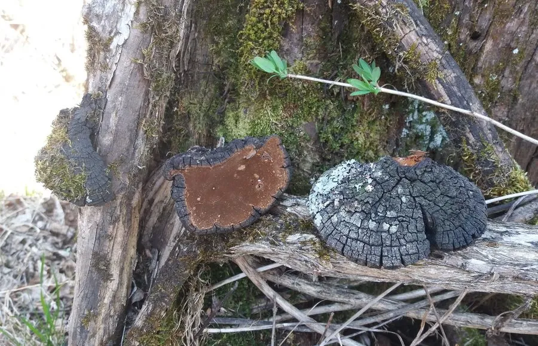

真菌 · 真菌界
桑黄 Sanghuangporus sanghuang

生长在桑树等阔叶树上的多年生木腐菌，菌盖金黄至深褐、质地坚硬如木，是传统中药中的名贵药用真菌。
- 分类
- 门担子菌门纲伞菌纲目锈革孔菌目科锈革孔菌科属桑黄孔菌属
- 栖息环境
- 桑树等阔叶树的树干上，多年生，生长缓慢
- 地理分布
- 东亚，中国东北、华北、西南和华东部分地区有分布
- 保护级别
- 暂无评估（IUCN 未评估，野生资源有限）
物种志
桑黄是担子菌门锈革孔菌目的木腐真菌，子实体多年生，呈马蹄形或半圆形，宽 3–20 cm，表面金黄色至深褐色，有同心环纹和龟裂，质地坚硬如木；菌盖下侧的菌管层呈黄褐色，孔口细密；孢子印淡黄色。它的生长缓慢，多年生个体可以不断增厚。
桑黄野生于桑树等阔叶树的树干上，主要分布于东亚，中国东北、华北、西南和华东的部分地区有分布。它是传统中药中的名贵药用真菌，被认为具有活血化瘀、软坚散结的功效，近年来因保健需求增加而受到关注。桑黄生长缓慢，野生资源有限，现已有部分人工栽培。采集时要注意保护寄主树木，不认识的野生菌不要随意食用或药用。
形态与习性
- 子实体多年生，马蹄形或半圆形，宽 3–20 cm
- 表面金黄至深褐色，有同心环纹和龟裂
- 菌管黄褐色，孔口细密
- 孢子印淡黄色
- 药用传统中药，活血化瘀、软坚散结
- 生境桑树等阔叶树干上，生长缓慢
- 栽培已有部分人工栽培
趣味知识
- 桑黄的子实体多年生，质地坚硬如木，可以不断增厚。
- 它是传统中药中的名贵药用真菌，寄生于桑树等阔叶树。
- 桑黄生长十分缓慢，野生资源有限。
- 采集桑黄时要注意保护寄主树木。